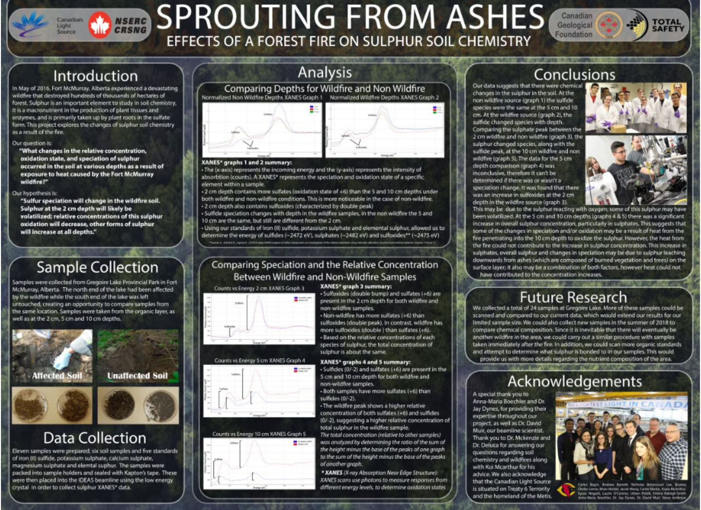

Synchrotron Research Team
Utilizing a particle accelerator to collect XAS data...

About the Team
As part of the Beamline for students program by the Canadian Light Source (CLS), I lead two seperate projects to utilize the particle accelerator to collect XRF and XANES data. This data was then subsequently used to determine sample composition, oxidation states and chemical speciation. The project was summarized and streamlined to be presented in a scientific poster format which was entered in a competition between all other schools participating in the program. Both projects I lead placed first amoung schools all across Canada.
Chromimun and Arsenic in the Oil Industry
Studying chromiun and arsenic throught the bitumen extraction process
Project Summary
FIRST's goal is to inspire students to become leaders in engineering and technology fields through engaging programs that build skills in science, engineering, and technology. Through these programs, students are inspired to innovate, develop vital work skills, and build skills in self-confidence, communication, and leadership.

Effects of a Forest Fire on Sulphur Soil Chemistry
Studying the effects of a forest fire on sulphur soil chemistry
Project Summary
FIRST's goal is to inspire students to become leaders in engineering and technology fields through engaging programs that build skills in science, engineering, and technology. Through these programs, students are inspired to innovate, develop vital work skills, and build skills in self-confidence, communication, and leadership.
